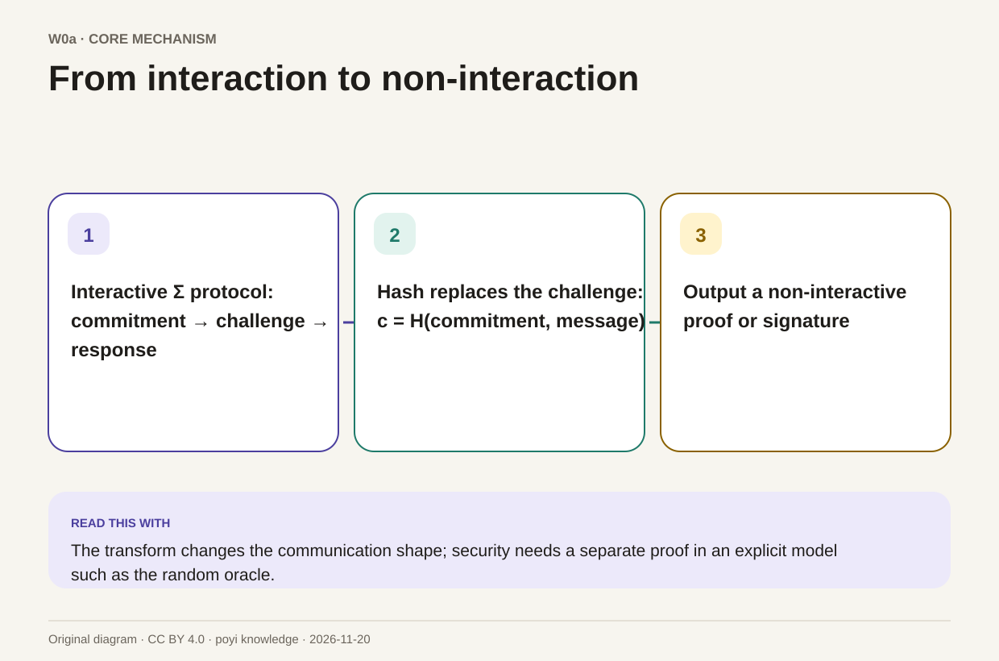
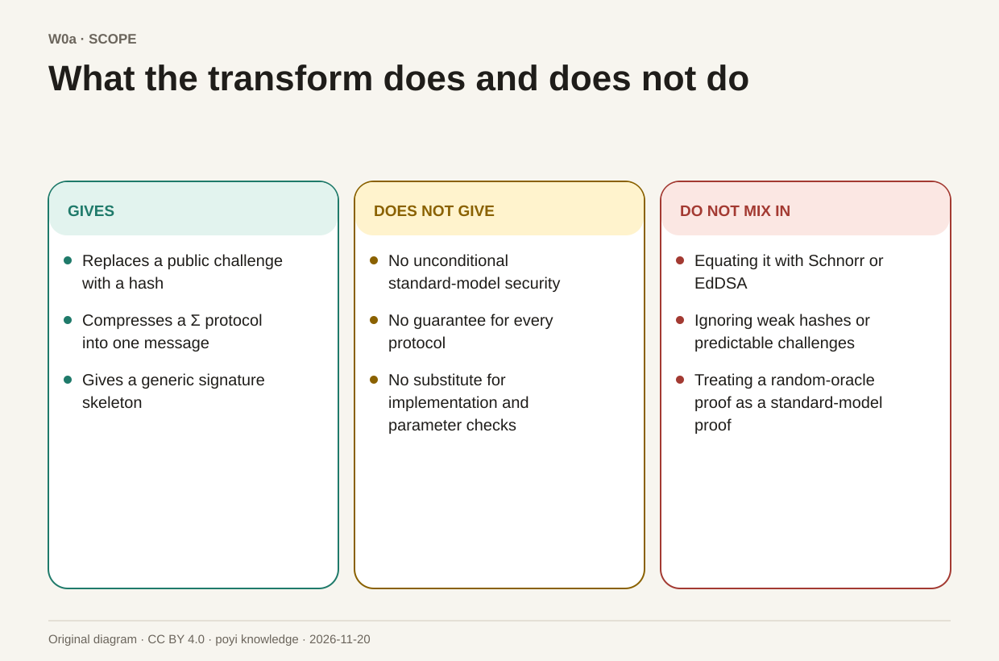

Principles
Algorithm: Fiat-Shamir Heuristic (Fiat-Shamir 启发式). The Fiat–Shamir heuristic is the most used — and most misused — transformation in cryptography: it turns an interactive protocol into a non-interactive proof or signature. A typical σ-protocol (interactive) looks like this:
- The prover (holding a witness w) sends a commitment a;
- The verifier (knowing only the statement x) picks a random challenge c;
- The prover responds with z;
- The verifier checks an equation (say
g^z = a · x^c). The key point: the challenge c is chosen at random by the verifier, so the prover cannot pre-select a challenge that suits them. Security also rests on two properties: special soundness (two accepting transcripts for the same commitment with different challenges let you extract the witness w) and zero knowledge (z does not leak w). The Fiat–Shamir transform replaces step 2's randomness with a hash:
c = H(session context || message || commitment a ...)
The prover computes c itself and answers z; the verifier recomputes c afterwards and checks the equation. The two sides no longer need to talk. An "I say, you say" protocol becomes "I say it all, you check later". How does that become a signature? Put the message into the hash input. Schnorr's signature is the prototype: the interactive identification protocol (commitment R = kG → challenge e → response s = k + e·x) plus the step "e = H(m || R)" is a signature. DSA, ECDSA, Ed25519 and BIP 340 are all variants of it, and ML-DSA is the lattice version — "Fiat–Shamir plus rejection sampling with aborts". Five conditions have to hold for the transform to be sound:
- The hash must be modelled as a random oracle (the RO model). This is the big assumption. The challenge must bind the entire statement and every commitment — public key, session identifier, message, all commitments. Leave one out and you have opened an attack path. The challenge space must be large enough and uniform (usually ≥ 2λ bits), or special soundness is too weak. The commitment must be unpredictable, otherwise the prover can grind: retry commitments until it draws a favourable challenge — this is precisely why "FS with Aborts" has an abort loop.
- The underlying protocol must itself be sound. FS amplifies a protocol's virtues; it cannot repair its flaws.

Why it matters
Without Fiat–Shamir there are no digital signatures as we know them.
A signature is defined as "the signer signs a message; a verifier checks it afterwards, alone". But the best identification protocols cryptographers can build are interactive — Schnorr's identification scheme is interactive, ElGamal's is too. Strip interactivity away and public-key cryptography becomes unusable in exactly the places it matters most: software updates, certificates, transactions, blocks.
Fiat–Shamir's contribution is removing the interaction at a cost of one extra hash call.
It is the highest-reuse idea in the field:
- Signatures: Schnorr signatures → DSA, ECDSA, Ed25519, BIP 340, and ML-DSA's lattice signatures. - Non-interactive zero-knowledge proofs: Schnorr's proof of knowledge of a discrete logarithm is the textbook NIZK; Bulletproofs-style range proofs build on it; blockchain scripts that assert "I know this secret" are usually exactly that. - Lattice cryptography: ML-DSA's "FS with Aborts" transplants Schnorr's linear structure onto module lattices, then adds rejection sampling to kill information leakage. - Multi-party and threshold protocols: MuSig2 and FROST live inside the Schnorr family, but they have to handle challenge-collision problems explicitly. - Verifiable computation: STARK-style systems lean on the same "bind the transcript into the challenge with a hash" idea when building commitments.
But the word "heuristic" in its name is a historical warning. The security argument in Fiat and Shamir's 1986 paper was wrong: its Lemma 6 implicitly relies on the forking lemma, a tool that would not be formalised for another nine years. The first fully correct proof for FS-ified Schnorr signatures had to wait for Pointcheval and Stern in 1996. Those twenty years are the lesson: the principle is beautifully simple, and its proof is the most delicate part of the field.
Applications
- Practically every mainstream digital signature: DSA, ECDSA, Ed25519, Ed448, BIP 340's Schnorr signature and ML-DSA's lattice signature are all Fiat–Shamir transforms. Fiat and Shamir's 1996 paper Security Proofs for Schnorr Signatures and the DDH Assumption exists to give this family a unified proof. - Non-interactive zero-knowledge proofs: Schnorr's discrete-log NIZK, Bulletproofs-style range proofs, and the challenge computations inside ring signatures and anonymous credential protocols. - Lattice signatures: ML-DSA uses FS with Aborts — hash the commitment into a challenge, then use rejection sampling to check whether the response leaks the secret, and abort and retry if it does. - Multi-signature and threshold signatures: Bitcoin's MuSig2 (BIP 327) and FROST (RFC 9591) both live in the Schnorr system, and both must handle challenge collisions explicitly. - Verifiable claims on blockchains: "I hold this private key" and "this transaction is authorised" assertions are usually direct instances of Schnorr NIZK. - Teaching and research: it is the standard example of "how do you turn an interactive protocol into a non-interactive one", and the best case study for why hash functions became security-critical infrastructure.
Limits & attacks
Fiat–Shamir has not been "broken", but it is among the most misapplied mechanisms in cryptography, and the most insidious. Every item below maps to a real incident or a published fix.
- "Weak FS" means malleable. If the challenge hashes only the commitment and not the statement (
c = H(a)rather thanc = H(x || a)), the whole transform is malleable: an attacker can turn one signature into another valid signature. Leaving the public key out of the challenge is the root of the related-key attacks in the Schnorr family and the reason BIP 340 insists on key prefixing. The rule is simple: public key, session identifier, message, every commitment — none of them may be omitted. - The original Fiat–Shamir paper's proof is wrong. Lemma 6 of the 1986 STOC paper implicitly depends on the forking lemma, which would not appear for another nine years; Bellare and Rogaway in 1993 likewise asserted soundness for FS as a proof system rather than proving it. The first complete proof for an FS-based signature is Pointcheval and Stern (EUROCRYPT 1996), which introduced the forking lemma — still one of the most-used tools in the field. - Omission attacks in multi-party settings (the ROS problem). In multi-signature and threshold protocols, an attacker can run many parallel signing sessions and use a polynomial number of hash queries to hunt for a challenge collision. Drijvers et al. (EUROCRYPT 2019) systematised this family of attacks and broke naive FS-based multi-signature constructions. That is why MuSig2 needs an extra round of nonce exchange and FROST needs a binding factor. FS holds for a single signature; in multi-party settings it has to be re-proven.
- FS is generally insecure in the quantum setting. The security proof relies on rewinding the adversary's oracle queries, and a quantum algorithm can manipulate several queries at once, so rewinding breaks. Ambainis, Rosmanis and Unruh (FOCS 2014) showed that in the quantum random oracle model the FS transform is insecure in general (at minimum, no relativizing proof exists). The workarounds are "lossy FS", "FS with Aborts" and Unruh's post-quantum variant. And of course every Schnorr-family signature was already doomed by Shor.
- It rests on "the hash is ideally random", an unfalsifiable assumption. Goldwasser and Kalai (STOC 2007) proved that if random oracles do not exist, the Fiat–Shamir heuristic is provably insecure. That is not academic pedantry: MD5, MD4 and SHA-1 have all been shown not to be random oracles, so running FS on them means standing on thin ice. The strength of the hash function became the load-bearing wall of the entire signature family.
- The challenge distribution must be uniform. Reducing a hash modulo the group order creates statistical bias; over many signatures, nonce information leaks and the private key eventually falls out. The right answer is rejection sampling — and ML-DSA rests its entire security on getting this right.
- The commitment must be unpredictable. If commitments can be predicted or chosen by the prover, the prover can grind its way to a favourable challenge. The abort loop in "FS with Aborts" exists exactly for this: notice that the sample would leak information, throw it away, start over. - The challenge space must not be tiny. With few challenge bits, the special-soundness extraction probability is high and forgery gets easier. This is the same point BIP 340 makes about "16-byte short challenges": in multi-signatures, a short challenge is collision-attackable, so you cannot save 16 bytes by shortening it.
- The hash must be collision-resistant and domain-separated. Reusing one hash function across protocols and contexts is exactly what lets an attacker move a signature from one protocol to another.

History
- 1986: Fiat and Shamir publish A Signature Scheme Based on the Difficulty of Factoring at STOC. The technique appears for the first time: they use a "squaring" identification scheme (based on factoring hardness) to build a signature by letting the signer compute the verifier's challenge with a hash. The security argument in this paper is later found to be flawed.
- 1989 / 1990: the same pair publish How to Prove Yourself: Practical Solutions to Identification and Signature Problems (CRYPTO '89 proceedings, published 1990), giving a fuller treatment of identification and signature schemes. A promised "full version" never appeared; this extended abstract is what circulates. Its Lemma 6 implicitly depends on the later forking lemma. - 1989 / 1990: Claus Schnorr uses the same trick to build the Schnorr signature (Efficient Signature Generation for Discrete Logarithm Problems, EUROCRYPT '90). From this moment FS and Schnorr are bound together, and they become the common ancestor of DSA, ECDSA, Ed25519 and BIP 340. - 1993: Bellare and Rogaway analyse the FS transform in the random oracle model (as a non-interactive proof system), asserting soundness without proving it. - 1996: Fiat and Shamir's Security Proofs for Schnorr Signatures and the DDH Assumption (EUROCRYPT 1996) gives the first rigorous treatment of the FS-ified Schnorr signature; Pointcheval and Stern, at the same conference, introduce the forking lemma and deliver the first complete proof; van Oorschot and Wiener publish their survey of the paradigm. This is the year FS stops being a heuristic and becomes a provable technique.
- 2005: Fischlin proposes an alternative construction that avoids rewinding, sidestepping the tightness loss and simulator blow-up that rewinding causes. - 2007: Goldwasser and Kalai prove in On the (In)security of the Fiat-Shamir Heuristic (STOC 2007) that if random oracles do not exist, FS is provably insecure.
- 2014: Ambainis, Rosmanis and Unruh show FS is generally insecure in the quantum setting and give "FS with Aborts" — the family ML-DSA later joins. - 2019: Drijvers et al. publish On the Security of Multi-signatures and MPC (EUROCRYPT 2019), exposing the ROS attack and forcing multi-signature schemes to be redesigned (MuSig2, FROST). - 2020s: ML-DSA writes FS with Aborts into a US federal standard, and post-quantum multi-signature protocols (ML-DSA-based MuSig variants) carry the same trick into the lattice world.
Worked example & verification
Formal model and reproduction steps
[h=H(M),\quad H:{0,1}^{*}\to{0,1}^{n}]
Fiat-Shamir Heuristic: the registered public parameters, key material or randomness, and message are mapped through the stated transformation to an output checked against the registered criterion. The worked example is a structural reproduction, not a new test vector; parameter ranges, standard versions and implementation details remain source-bound.
References
- Wikipedia search entry for Fiat-Shamir 启发式. https://zh.wikipedia.org/w/index.php?search=Fiat-Shamir%20%E5%90%AF%E5%8F%91%E5%BC%8F
- Handbook of Applied Cryptography (Menezes, van Oorschot, Vanstone). https://www.cacr.math.uwaterloo.ca/hac/